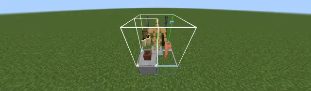
MCBE 限制类方块原理与三种方块分类方式
首先这里说一下，首先，着重会介绍一下限制类方块的原理，然后再进行方块分类的讲解，是三种方块分类方式，每种分类方式的话，都会把所有方块分为三种类型，底下可能还有子类型问题不大
一.限制类方块作用原理
首先我们都知道，限制类方块的作用就是当生物的碰撞箱跟限制类方块的作用范围重合時，限制该生物的生成，大部分有碰撞体积的限制类方块，它们的作用范围跟本身的碰撞箱以及碰撞体积是一致的，没有碰撞体积的限制类方块，大部分都是仅在和挤压类方块同时存在时表现出限制类方块的性质，单独存在時并没有任何影响
其中稍微特殊一些的是，按钮和拐角栅栏，按钮是唯一一个没有碰撞体积，但是作用范围跟碰撞箱相同的限制类方块，拐角栅栏是唯一一个碰撞箱跟碰撞体积不相符，但是作用范围跟碰撞箱相同的限制类方块
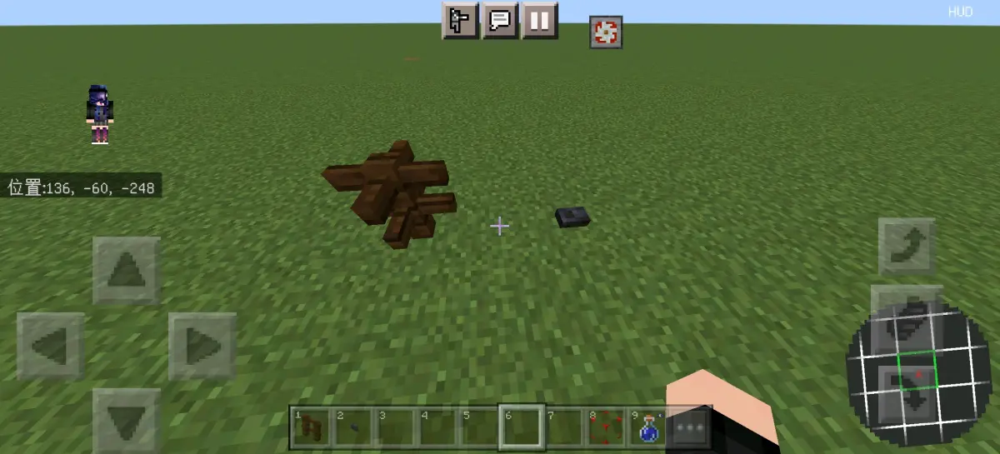
然后这里接下来我们要解答一个之前一直存在的误区，就是第一种分类方式当中，只存在挤压类，限制类以及阻挡类方块，之前说的那些所谓的不是挤压也不是限制类的方块，像是蜡烛，玻璃板之类的，实际上，它们都属于挤压类方块，只是我们之前误解了限制类方块的作用机理，导致出现了误判，所以接下来我们先讲解一下限制类方块的实际作用原理
实际上，这个之前vf在群里就跟我们说过，但是我们当時因为测试失误的原因并没有注意到，直到最近重新测试的時候，才发现好像确实是这样，问题不大
所以，实际上，限制类方块的作用原理就是，当空间检测范围内包含有限制类方块的時候，将空间检测范围内的所有方块的性质均视为限制类方块，作用范围与本身的碰撞体积相同
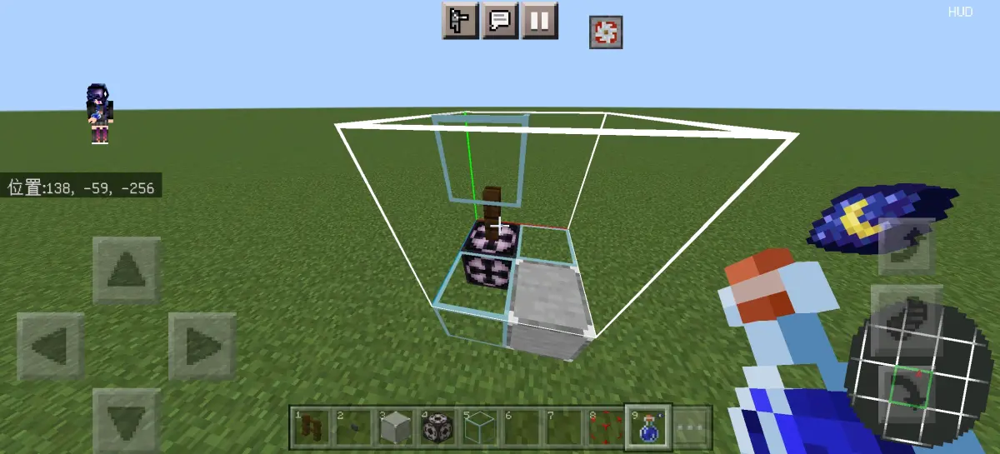
所以像这种就很经典的失败案例，正是因为限制类方块的存在，虽然本城限制类方块并没有与僵尸的生物的碰撞箱有接触，但是因为限制类方块的存在，导致玻璃在玻间检测判定時也被视为了限制类方块，而玻璃是与僵尸等生物的碰撞箱有直接重合的，因此就会判定为生成失败
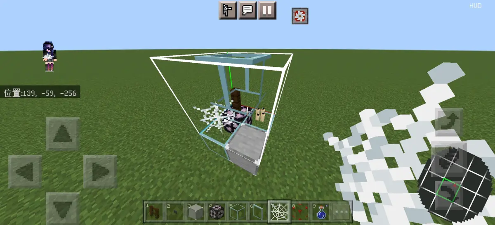
另外就是像这种典型的成功案例，原因就是即使将这些方块性质全部都视为了限制类方块，但是生物的碰撞箱依然没有与这些方块的碰撞体积有重合，注意被限制类方块改变性质之后的方块的作用范围是碰撞体积，因此，玻璃板的碰撞箱虽然与生物的碰撞箱重合，但是并不会影响生物生成，除非是拐角栅栏这种本身是按照碰撞箱来计算限制的方块，但那是因为他本来就是限制类方块，而并不是由限制类方块所带来的效果转变过去的方块，问题不大
但是如果要论证我们这个观点的正确还仅仅是这些不够，因为我们必须得说明玻璃板以及蜡烛之类的这些之前被认为是并不是限制，也不是挤压的方块，实际上，确实是具有挤压的性质，所以经典的来了
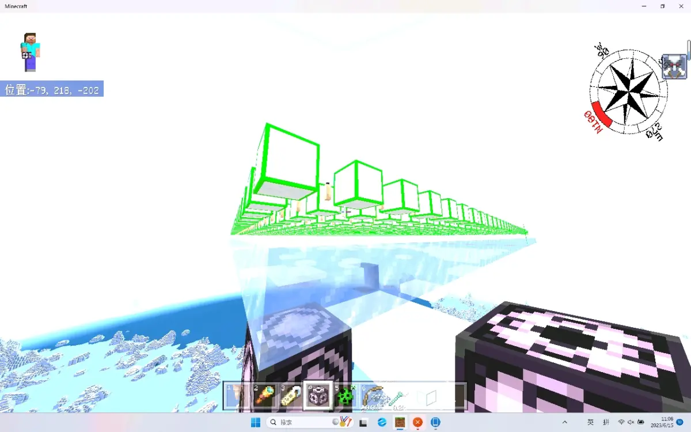
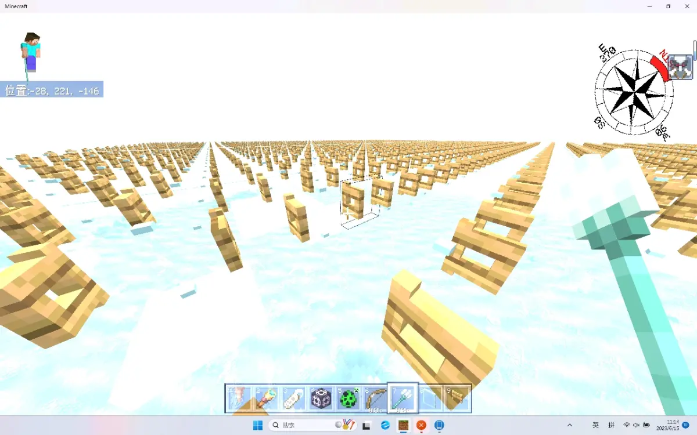
首先在什么都不加，以及这几个单独使用的情况下，都是可以正常刷的，这个我们测试过了，图片就不放了，这里之所以选择北极熊，就是因为那些正常的生物只有0.6宽，根本就碰不到蜡烛和玻璃板，所以得选一个本身比较宽的，能够碰到蜡烛和玻璃板的，所以就选了北极熊，可以看到，在有限制类方块并且生物本身的碰撞箱跟方块的碰撞体积有重合的情况下，玻璃板跟蜡烛等之前认为非挤压非阻碍的方块就成功的展现出挤压类方块的性质
其他那些像末地烛，花盆之类的具有碰撞体积的方块，我们也进行了测试，确实也都符合这一结论，因此基本可以认为这个结论是正确的了
也就是限制类方块的作用原理是，在不改变限制类方块自身性质与判定的情况下，将空间检测范围内包含有限制类方块的生物的空间检测范围内的其他方块性质均视为限制类方块，并且经此更改性质的方块作用范围与碰撞体积一致，注意是碰撞体积而非碰撞箱，问题不大
二.分类一（1）：挤压、限制、阻挡
这个就是直接承接上面这里了，首先，挤压类方块跟限制类方块很好区分，就是通过上述限制类方块的作用原理，将该方块与已知的挤压类方块或者限制类方块进行混合测试，最终就可以区分开来
并且这里需要着重说一下，那些本身没有碰撞体积的，比如说物品展示框，脚手架，蜘蛛网，线之类的，虽然可以打他单独列出来，作为一个没有影响的分类，但是实际上我们更加偏向于把它依旧放在挤压类方块当中，作为挤压类方块当中的一个没有碰撞体积的挤压类方块的分支，因为这并不影响我们整个分类的结构和原理，以及结论的得到，所以问题不大
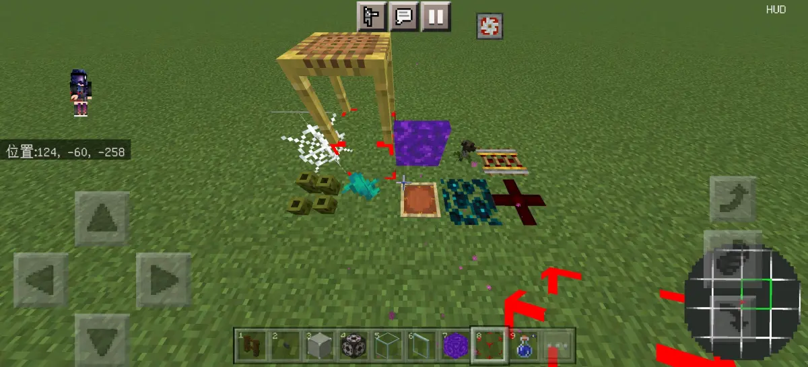
然后很多人觉得限制类跟阻挡类是同一种，或者说，他们认为阻挡类是限制类当中的一种特殊的，也就是具有完整碰撞体积的限制类，但是实际上的话并不是这样，限制类跟阻挡类有一个最明显的区别，就是在空间检测上，生成点正上方第二格的位置，如果是阻挡类方块，无论其他位置如何，任何生物都是无法生成在其下方的，但是如果是限制类方块在第二个的位置的话，那么，与其作用范围没有重合的生物，还是可以生成在其下方的，这里放两张最经典的例子图就知道了
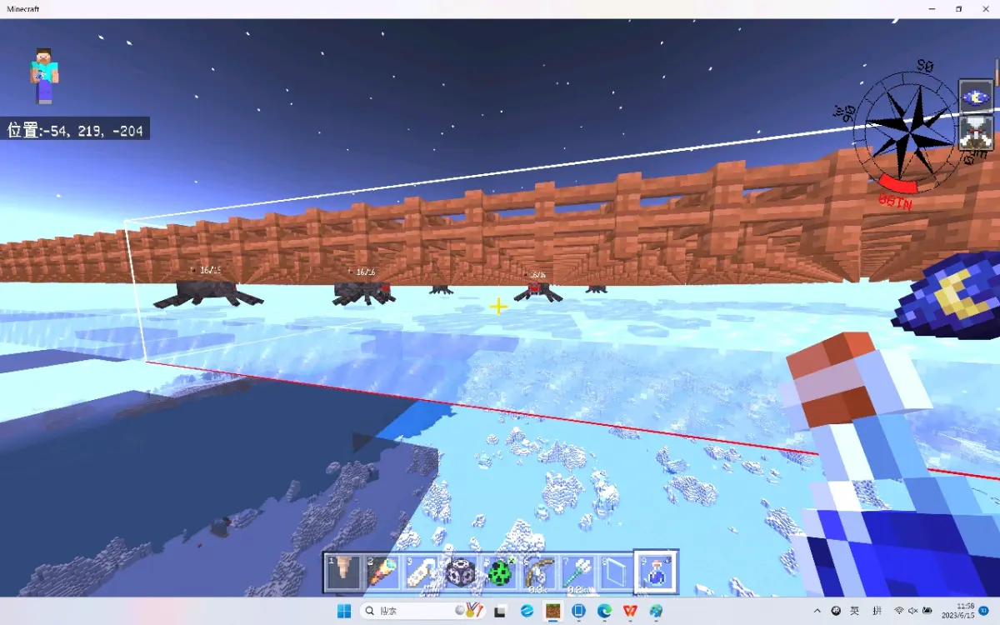
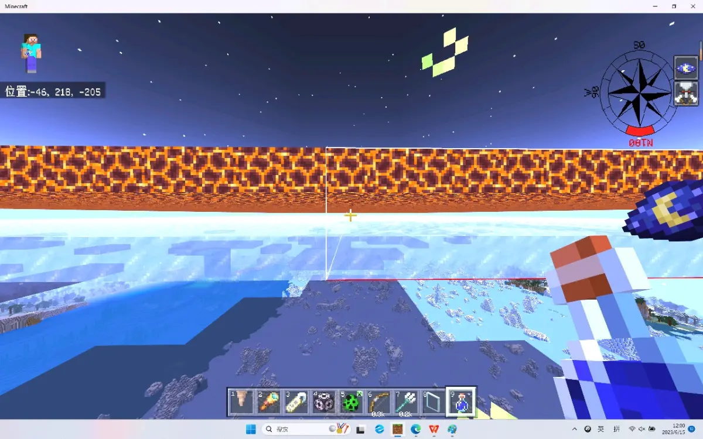
可以看到，就是这样，很明显的，如果这个方块它是属于限制类的话，那么把它放在第二格是不会影响没有限制到的生物的生成的，但是如果是阻挡类方块的话，放在第二格的话，下方是无论什么生物都无法生成的，这就是区分这两种方块类型，最典型也最明显的方式了，问题不大
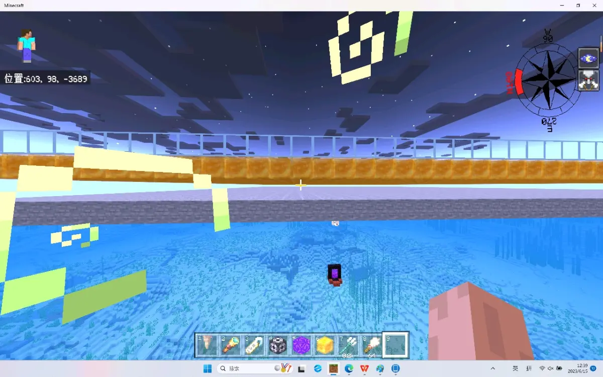
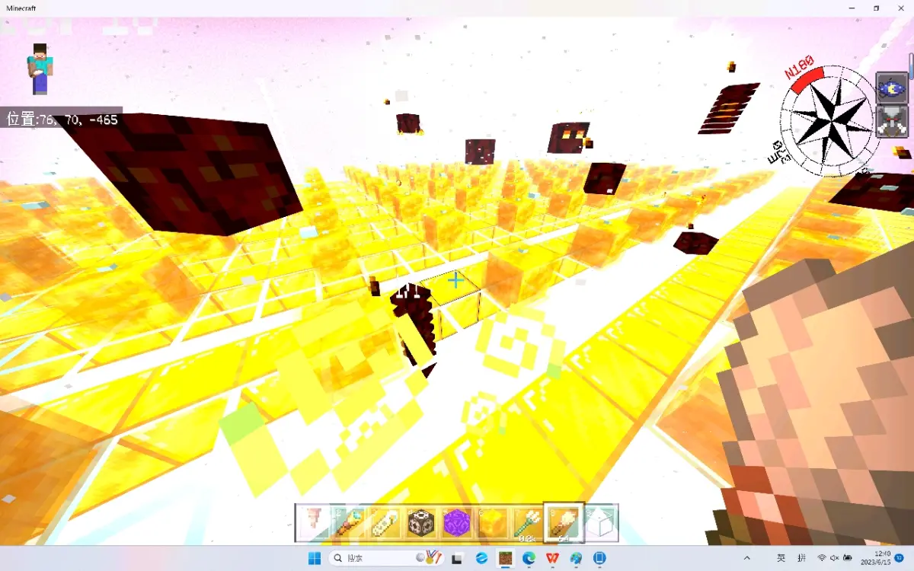
不过我们需要注意，除了不能放在第二格的位置这个区别之外，其他方面阻挡那方块跟限制类方块是一致的，也就是说，如果没有与生物碰撞箱重合的话，也是不会影响生物生成，并且同样会将检测范围内的挤压类方块视为限制类，问题不大
就像上面蜂蜜块，确实是个阻挡类方块，而且从对于岩浆怪的效果来看，也确实，除了不能放在第二格之外，都跟限制类一致
行吧，然后接下来的话，我们就把这个分类的结果，给他汇聚成了一个表格，就像下面这样
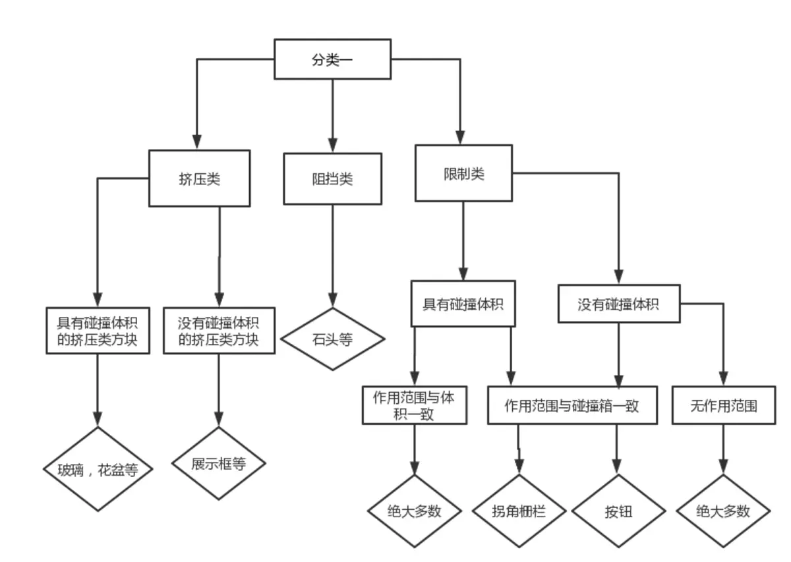
有一说一，这个讲起来绝对是要讲一大堆的，我们也实在不想讲那么多，所以就直接把它汇总成了一个图表，上面的方框是分类，最下面那个菱形是举例子，问题不大
至于说分类原理的话，就是按照上面我们所讲的原理就是，原理就没有在图中写出来了，只是把结果展示出来，问题不大
三.分类一（2）：完全不阻碍、部分不阻碍、阻碍
实际上的话，这个跟上面那个就是有一定的重合的，但是因为确实也并不能算作同一种，所以还是把它单独给分出来，不过实际上的话，里面的大部分东西，我们上一个专栏就已经讲过了
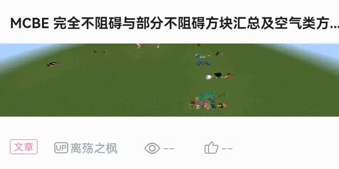
站内专栏 »其中，完全不阻碍生成方块的话，这个专栏里面已经全部写到了，所以完全不阻碍生成方块就不再过多解释，而且解释起来也很简单，字面意思理解，可以直接放在生成点上，而且不影响生物生成的方块
至于部分不阻碍生成方块，实际上的话，在上面那个专栏里面只写了挤压类的方块，但是实际上，不少的限制类的方块也可以算作是部分不阻碍生成方块，因为部分不阻碍生成方块的定义是，可以放在次要检测位置当中并且不影响生成的方块，那么的话，实际上限制类方块，只要对应的生物的碰撞箱没有与它的作用范围重合的话，也确实是符合这个定义，这个对于那些本身没有碰撞体积或者碰撞体积很小的限制类方块来说尤为明显，所以广义上来讲，这个也确实可以算作是部分不阻碍生成方块，问题不大
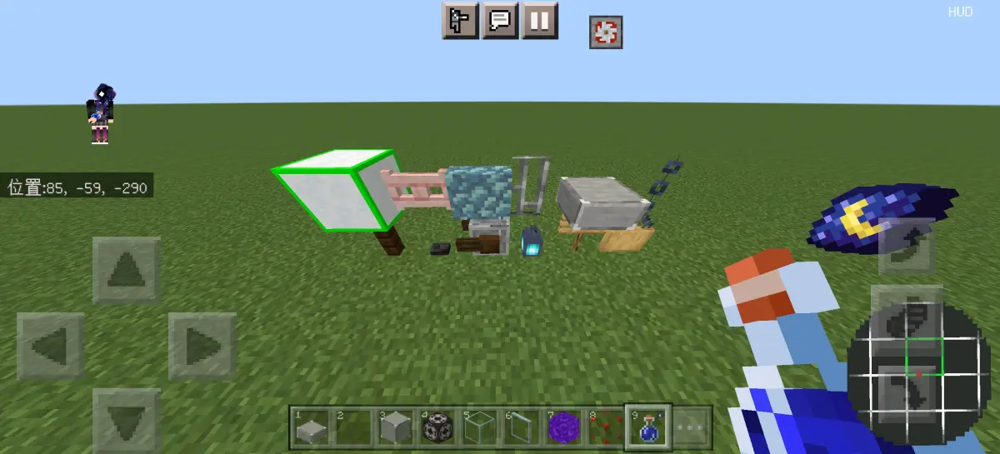
只不过注意还有一个特殊的，那就是碰撞体积不完整的阻挡类方块比如蜂蜜块，这种的位置就比较特殊了，因为他们除了不能放在主要检测位置之外，也不能放在头顶正上方第二格，但是除此之外的话，就跟限制类的部分不阻碍生成方块是一致的，问题不大
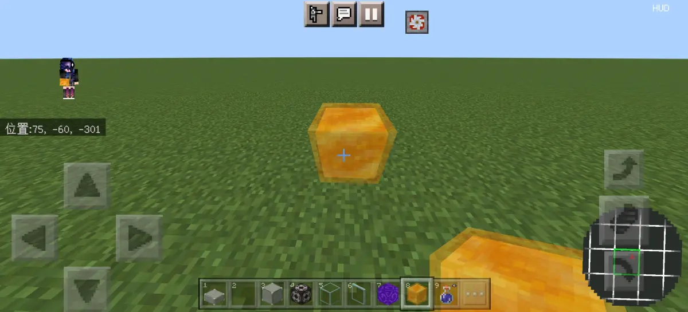
至于阻碍生成方块的话就非常明显了，就是一旦出现在空间检测范围内，因为其体积的完整性，势必会导致生物的碰撞箱与其重合，其中就包括了所有具有完整碰撞体积的阻挡类方块与限制类方块，图片也放出来了，可以看一下
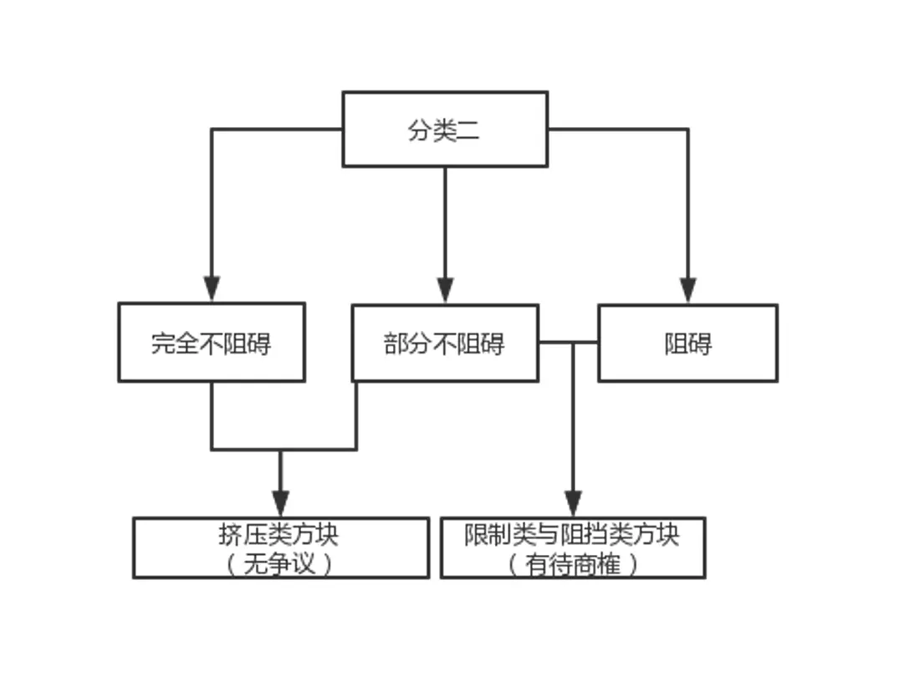
但是有一说一这个后面两者总觉得分的有点莫名其妙的感觉了，完全不阻碍这个是很清晰的，这个没有任何的疑惑，部分不阻碍当中的挤压类型的方块，也是非常清晰的，这个也没有疑惑
但是疑惑就在于，限制类方块跟阻挡类方块，这些当中都有一部分可以算作是广义上的部分不阻碍生成方块，另一部分算作阻碍生成方块，所以这个界限确实感觉不是特别清晰，就有点难搞，而且也确实不好搞，所以这个也就暂時先这么放着吧，问题不大
四.分类一的总结
实际上这两个东西可以说是同一个，就是挤压类分为完全不阻碍和部分不阻碍，然后就是限制类，以及完全阻碍或者说阻挡，就你关于其中一些不太明确的点来说明一下
首先就是很多人会感觉限制类和阻挡类有的情况下也会表现出部分不阻碍的性质，特别是那些没有作用体积的比如打开的栅栏门，但是这里我们来说一下这个东西和标准的部分不阻碍的区别
标准的部分不阻碍方块的性质是在非主要检测区域内即使与生物的碰撞相检测重合也不会阻碍生物生成
然后这里那些看起来像是部分不阻碍的限制类方块所表现出来的性质是当限制类方块不和碰撞箱检测相重合则不会影响生物生成
这两个只是结果看起来一样，但是表现出来的实际性质是两码事，要区分开来
然后对于那一部分没有作用体积的，分类方式就是利用限制类的第2个性质也就是会将空间检测范围内的其他挤压类方块也视为限制类，所以就run这些没有作用体积的方块和有作用体积的挤压类方块同時出现在空间检测范围内，然后观察挤压类方块是否被视为了限制类方块，以此进行区分，所以要区分开来，问题不大
五.分类二：真空气、伪空气、非空气
这个的话就也是很简单，而且没有任何争议的，就是从空气检测上来进行的分类，之前我们这个专栏里对伪空气类方块进行了初步的讲解，可以先去看一下
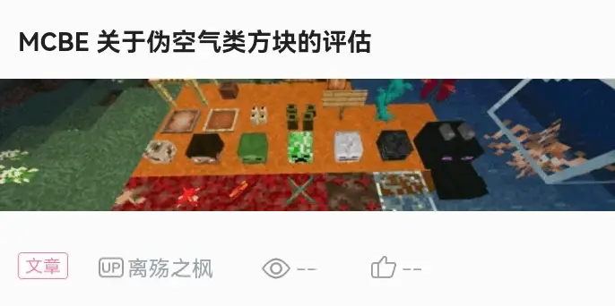
站内专栏 »总之的话，这个就是一个很明显的知识和原则，也就是生成尝试的产生，首先，最基础的一点就是需要空气检测通过，否则这个方块上连生成尝试都不会有，问题不大
首先，我们需要知道空气检测这个东西，这个是在自然生成和结构生成当中存在，跟生物种类没有关系，空气检测的检测范围是固定的1格，也就是生成点正上方1个方块，空气检测通过的条件是，生成点正上方1格必须是真空气类方块或者被判定为真空气类方块的伪空气类方块，否则空气检测失败，生成尝试不产生
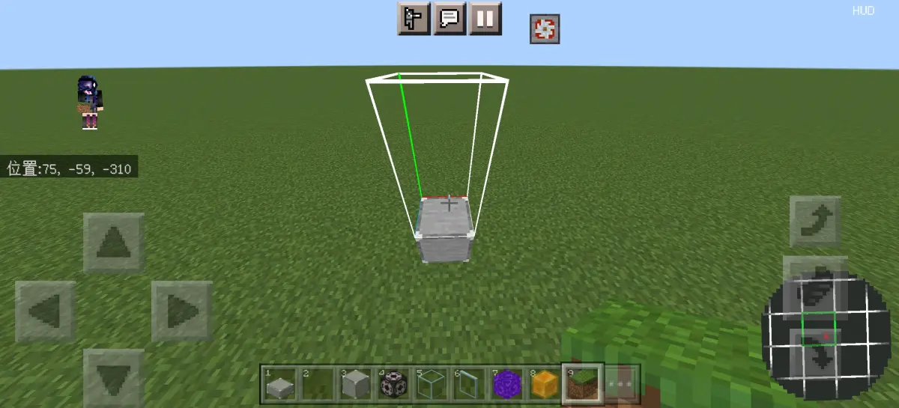
然后接下来就是讲解区分这三种方块的方式，首先就是真空气类方块，根据上述的空气检测机制，不难知道，真空气类方块就是在空气检测范围内，直接被认为是空气的方块，目前来说，暂時是以两种流体，结构空位（已改为伪空气类），光源方块，气泡柱等方块为主，其余的均过于冷门
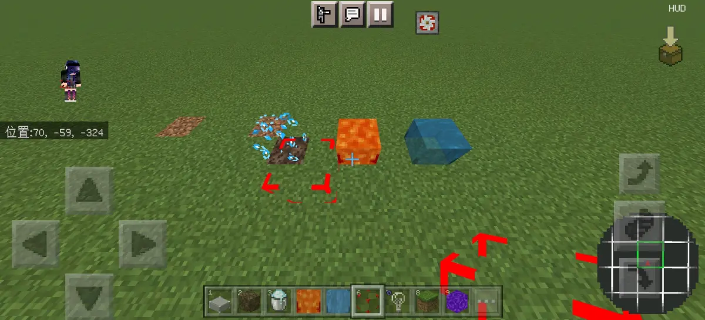
当然，1.17之前篝火和灵魂篝火也属于该类方块并且还是对所有生物的完全不阻碍，但是1.17之后就变成了伪空气类方块了而且对大部分生物也是部分不阻碍了，属于是時代的眼泪了，问题不大
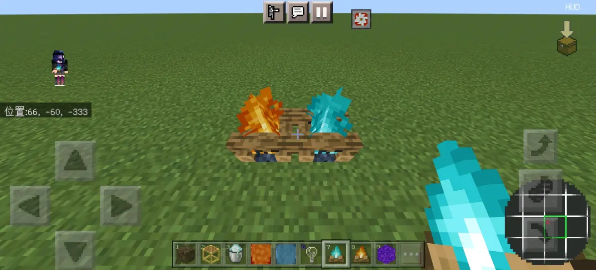
然后接下来是伪空气类方块，上面那个专栏里面有初步的介绍，不过这里还是再讲一下，伪空气类方块就是，可以将空气检测往上延伸，如果上方还是伪空气类方块则继续往上，直到找到第一个非伪空气类方块的方块，然后下方所有的伪空气类方块性质均等效于上方所找到的那个方块的空气类方块性质
说人话就是，可以把空气检测往上挪，然后上面找到的第一个其他方块的空气性质是什么，下面那一堆伪空气类方块的性质就全部跟它相同，问题不大
这里还是直接上图，可能好理解一点
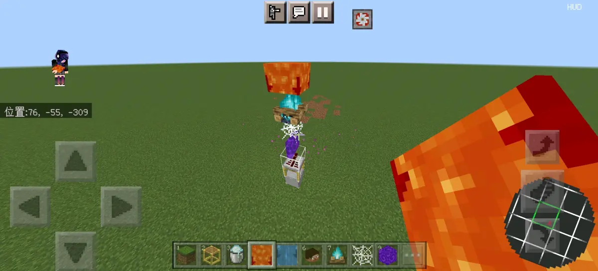
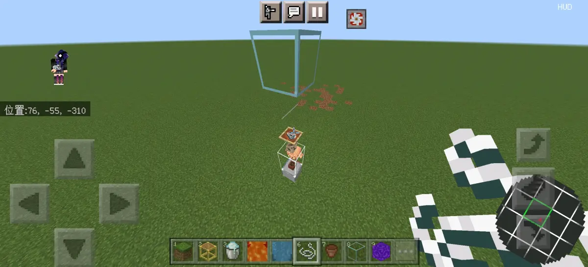
第一张图当中那一堆伪空气类方块上方找到的第一个其他方块是岩浆，也就是真空气类方块，因此，下方那一堆相连的伪空气类方块都被判定为真空气类方块，因此，空气检测通过
但是第二个当中找到的第一个其他方块是玻璃，也就是非空气类方块，那么，下方相连的那一堆伪空气类方块都被判定为非空气类方块，因此，空气检测失败
这样子的话，应该就已经很好理解了，所以伪空气类方块的判定依据就是是否可以将空气检测向上顺移，问题不大
然后接下来就是非空气类方块，这个就是非常简单了，非空气类方块就是在空气检测中，无论如何都不会被判定为空气的方块，并且覆盖在伪空气类方块上方，会让下方的伪空气类方块也被视为非空气类方块的方块
这里顺便说一下，除了那几个真空气方块之外，所有的伪空气类方块或多或少对于某些生物或者全部生物具有完全生成不阻碍方块的性质，而除了完全不阻碍生成方块之外，其他所有的只具有部分不阻碍生成方块或者阻碍生成方块性质的方块全部都是非空气类方块，问题不大，这里依旧上图
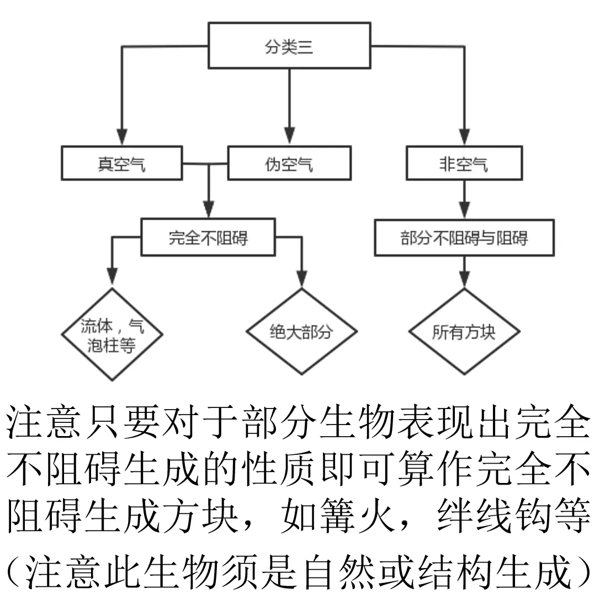
行吧，那基本上就这些，不过这里额外顺便提一个特殊的东西，就是守卫者，这个东西不仅在空间检测上被阉割成了1×1的范围，而且在空气检测上也被阉割了，它的空气检测是要求上方两格内必须有一个真空气，并且不能是被判定为真空气的伪空气，必须是本身就是真空气的方块，除此之外，并没有其他的特例了，问题不大
 站内专栏 »
站内专栏 »
六.结尾
行吧，那基本上就这些了，实际上，关于第二种那个部分内容还尚有争议的分类方式，我们其实开始是在想要不要写进来的，但是后面想了一下，因为确实不好归类到第一种当中去，甚至说第一种自身都存在一定的争议，但是好在并不影响结果，所以的话，最后还是把它也放了进来，只不过标明了尚有争议而已，问题不大，但是不管是前面两种中的哪一种，至少其中的部分内容还是没有争议的，所以也确实具有一定的参考价值，问题不大
第三种空气类的分类，这个是没有任何争议的，所以可以直接拿去用就好了，问题不大
行吧，这里我们本来也只是想着重讲一下那个限制类方块的作用原理，但是也顺带的把这三种分类方式给写了出来，那也就这样吧，也算是完了，到此结束，问题不大
鸣谢：@Cookie_531